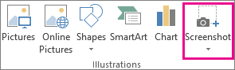
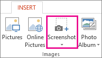
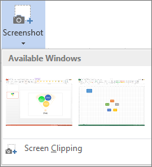

You can quickly and easily add a screenshot to your Office file to enhance readability or capture information without leaving the program that you are working in. This feature is available in Excel, Outlook, PowerPoint, and Word.
Screenshots are useful for capturing snapshots of programs or windows that you have open on your computer. When you click the Screenshot button, open program windows are displayed as thumbnails in the Available Windows gallery. You can insert the whole program window, or use the Screen Clipping tool to select part of a window. Only windows that have not been minimized to the taskbar can be captured.
Click in the document at the location where you want to add the screenshot.
In Excel, Outlook, and Word: On the Insert tab, in the Illustrations group, click Screenshot.

In PowerPoint: On the Insert tab, in the Images group, click Screenshot.

The Available Windows gallery appears, showing you all the windows that you currently have open. Do one of the following:
To insert a screenshot of an entire window into your document, click the thumbnail image of that window.
To add a selected portion of the first window shown in the Available Windows gallery, click Screen Clipping; when the screen turns white and the pointer becomes a cross, press and hold the left mouse button and drag to select the part of the screen that you want to capture.

Tip: If you have multiple windows open, you'll first need to click the window you want to capture before starting the screenshot process. This will move that window to the first position in the Available Windows gallery. For example, if you want to take a screen clipping from a web page and insert it into a Word document, first click the screen with the website, and then go directly to your Word document and click Screenshot. The screen with the web page will be in the first position in the Available Windows gallery, and you can click Screen Clipping to select a portion of that screen.
The window or portion of the screen you selected is automatically added to your document. You can use the tools on the Picture Tools tab to edit and enhance the screenshot.